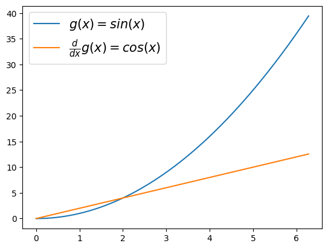
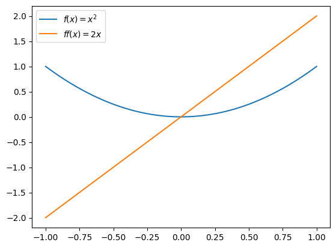

(6, 1, 3)Lesson 09: 함수관련 기본기능 – 내장함수, lambda, 데코레이터
내장함수
- sum,min,max
- eval
- sorted
- all, any
lambda
- 예제1: 람다표현식(lambda expression)자체가 하나의 오브젝트임
<function __main__.<lambda>(x)>- “lambda x: (x-2)**2” 는 \(lambda(x)=(x-2)^2\)의 느낌으로 기억하면 쉬움
(사용방법)
Quiz
\(f(x)=\sqrt{x}\) 를 수행하는 함수를 lambda를 이용하여 구성하라.
- 예제2: 람다표현식에 이름을 줄 수 있음.
위의 코드는 아래와 같다.
- 예제3: 조건부 출력
Quiz
임의의 알파벳 문자열을 입력으로 하고, 알파벳이 대문자이면 “대문자 입니다”를 출력하고 소문자이면 “소문자 입니다”를 출력하는 함수를 구성하라.
(힌트) 아래코드 이용
- 예제4: 람다표현식들의 리스트

- 예제5: 람다표현식들의 딕셔너리
{'f1': <function __main__.<lambda>(x)>,
'f2': <function __main__.<lambda>(x)>,
'f3': <function __main__.<lambda>(x)>}
- 예제6: 람다표현식을 리턴하는 함수 (함수를 리턴하는 함수)
(예비학습) 함수 \(g(x)\)가 정의되어 있을때 \(\frac{d}{dx}g(x)\)의 값을 계산해보기
(목표) 도함수를 구해주는 derivate 함수를 정의하자. 이 함수는 임의의 함수 g를 입력으로 받으면, g의 도함수(gg)가 리턴되는 기능을 가진다.
(사용1)
plt.plot(x,g(x),label=r'$g(x)=sin(x)$')
plt.plot(x,gg(x),label=r'$\frac{d}{dx}g(x)=cos(x)$')
plt.legend(fontsize=15)<matplotlib.legend.Legend at 0x7fb48a8620b0>
(사용2)
x = np.linspace(-1,1,100)
plt.plot(x,g0(x),'--',label=r'$g_0(x)=\frac{1}{6}x^3$')
plt.plot(x,g1(x),'--',label=r'$g_1(x)=\frac{1}{2}x^2$')
plt.plot(x,g2(x),'--',label=r'$g_2(x)=x$')
plt.legend(fontsize=15)<matplotlib.legend.Legend at 0x7fb48a7bae30>
- 예제7: 예제6의 다른표현
(사용1)
plt.plot(x,g(x),label=r'$f(x)=sin(x)$')
plt.plot(x,gg(x),label=r'$\frac{d}{dx}f(x)=cos(x)$')
plt.legend(fontsize=15)<matplotlib.legend.Legend at 0x7fb48a6a3df0>
(사용2)

데코레이터
미분
- 기본예제
- 미분의 구현1
x = np.linspace(-1,1,100)
plt.plot(x,f(x),label=r'$f(x)=x^2$')
plt.plot(x,ff(x),label=r'$ff(x)=2x$')
plt.legend()<matplotlib.legend.Legend at 0x7fb488fba4d0>
- 미분의 구현2
코드실행 시간 측정
- 예제2: 코드의 실행시간 측정
타임아웃
import time
import functools
def timing_decorator(func):
@functools.wraps(func)
def wrapper(*args, **kwargs):
start_time = time.time()
result = func(*args, **kwargs)
end_time = time.time()
execution_time = end_time - start_time
print(f"Execution time of {func.__name__}: {execution_time:.6f} seconds")
return result
return wrapper
@timing_decorator
def time_consuming_task():
# 시간이 오래 걸리는 작업 시뮬레이션
time.sleep(2)
print("Task completed.")
time_consuming_task() # 함수 실행 시간 측정 및 출력Task completed.
Execution time of time_consuming_task: 2.002197 seconds로그
import functools
def logging_decorator(func):
@functools.wraps(func)
def wrapper(*args, **kwargs):
print(f"Calling function: {func.__name__}")
print(f"Arguments: {args}, {kwargs}")
result = func(*args, **kwargs)
print(f"Result: {result}")
return result
return wrapper
@logging_decorator
def add(a, b):
return a + b
add(2, 3) # 함수 호출과 로그 출력Calling function: add
Arguments: (2, 3), {}
Result: 55import time
def loop_progress_decorator(func):
def wrapper(*args, **kwargs):
total_iterations = kwargs.get('total_iterations', 10)
print(f"Starting loop with {total_iterations} iterations.")
start_time = time.time()
for i in range(total_iterations):
result = func(*args, **kwargs)
elapsed_time = time.time() - start_time
print(f"Iteration {i + 1}/{total_iterations} completed in {elapsed_time:.2f} seconds.")
return result
return wrapper
# 예시 함수
@loop_progress_decorator
def example_function(total_iterations):
# 시간이 오래 걸리는 작업 시뮬레이션
time.sleep(1)
return "Task completed."
example_function(total_iterations=5)Starting loop with 5 iterations.
Iteration 1/5 completed in 1.00 seconds.
Iteration 2/5 completed in 2.00 seconds.
Iteration 3/5 completed in 3.00 seconds.
Iteration 4/5 completed in 4.00 seconds.
Iteration 5/5 completed in 5.01 seconds.'Task completed.'